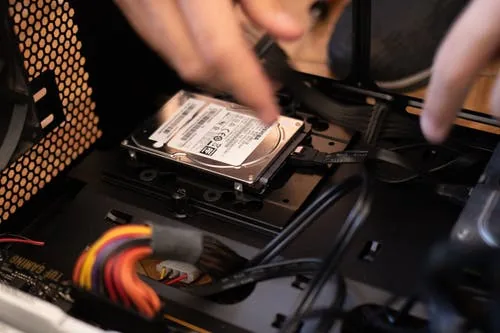
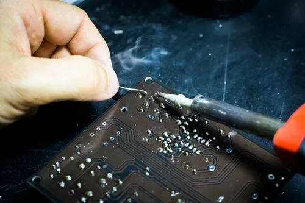
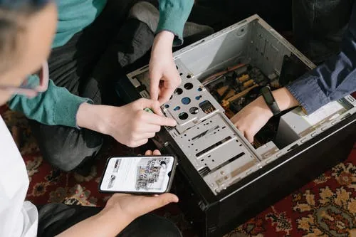
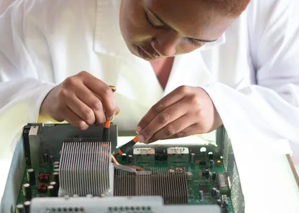
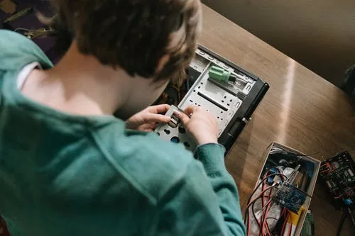

AM
Laptop repair
Got a laptop diagnosed quickly after repeated startup issues and hardware errors. The repair process was clear and the system was stable again within a short time.
We offer professional computer repair and IT services including system diagnosis, data recovery, performance improvement, and software troubleshooting. Our services also cover malware removal, cybersecurity solutions, and home & office network installation.
We specialize in CCTV, NVR, and DVR installation and maintenance, delivering reliable security solutions for homes and businesses. Our goal is to provide fast, affordable, and dependable technology services you can trust.
Fixing hardware issues, system errors, and complete troubleshooting for laptops & desktops.
Recover lost data from crashed systems and set up secure backup solutions.
Speed optimization, software installation, and fixing system slowdowns.
Malware removal, system protection, and security setup to keep your data safe.
Home & office Wi-Fi setup, router configuration, and network troubleshooting.
Quick remote assistance for software issues, troubleshooting, and guided system support without an on-site visit.
Installation and service of CCTV cameras, NVR, and DVR systems.
Doorstep support and regular maintenance for homes and businesses.





Real examples of the kinds of support requests we handle across nearby areas.